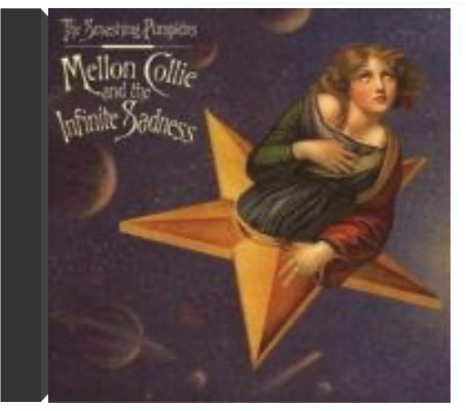
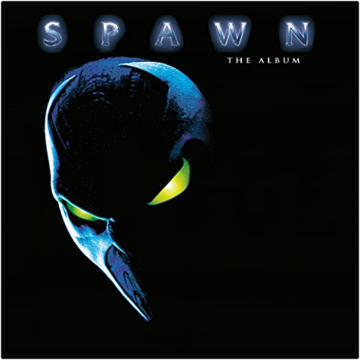
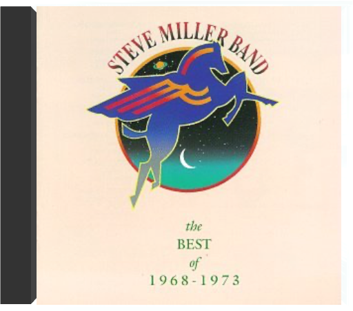
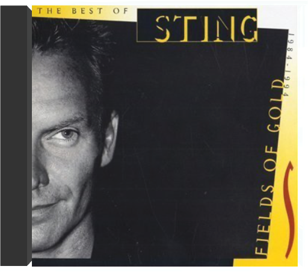

 mellon collie and the infinite sadnessthe smashing pumpkins  Avec ce double LP sorti en 1995, les Smashing Pumpkins entraient dans l'histoire du rock par la grande porte, tenue par David Bowie en personne (le groupe le plus intéressant et le plus créatif qu'il ait jamais entendu). Pourtant, rien ne prédestinait ce gang de Chicago, ni grunge ni metal, ni pop ni punk, ni gothique ni psychédéliques, à enregistrer l'album de l'année pour les lecteurs réunis de Rolling Stones, de Request ou de Spin. Billy Corgan, leader perturbé nourri d'influences 70's plus ou moins avouables, de Cure à Van Halen, décide alors de construire The Wall de la Generation X. Son opéra rock lui permet d'exorciser en 28 titres répartis en 2 sections, "Dawn To Dusk" et "Twilight To Starlight", ses propres démons. Cet exercice narcissique, émotionnellement saturé et enrobé de harpe et de piano, placé sous la tutelle de Flood (U2, Depeche Mode) et d'Alan Moulder (My Bloody Valentine, Nine Inch Nails), donne un concept album gargantuesque qui, à la manière du "Double Blanc" des Beatles, place les Smashing Pumpkins hors classement. Rock épique aux visions grandioses, Mellon Collie and the Infinite Sadness reste cependant un album truffé de hits incontournables "Bullet With Butterfly Wings", "Zero", "Fuck You (An Ode To No One)" "Tonight Tonight", etc. Aucun superlatif n'y suffirait. —Sabrina Silamo  Soul Jazz Records' Nigeria Soul Power 70 album showcases the influence of funk, rock and disco on Nigerian music during the 1970s. Originally released as a now-long-out-of-print collectors' 7' RSD box, this fully expanded album release now also includes extra tracks from Sonny Okosuns, Wings, Chief Kollington Ayinla and more. While for many people the fusion of funk and jazz music with Nigerian rhythms and aesthetics began with Fela Kuti and his afro-beat sound, in fact this can be traced further back to the phenomena of the 1960s Nigerian artists and house bands in nightclubs and hotels who interpreted US soul and pop music with a local flavour and none more so than Geraldo Pino, the 'African James Brown' who features heavily in this collection. Other similarly inspired Nigerian funk and soul artists featured here included Tony Grey and his Ozimba Messengers and Don Bruce and The Angels. Nigeria Soul Power 70 includes a number of tracks from the group Wings originally known as BAF (Biafran Air Force) Wings, an army band formed during the Biafran civil war in Nigeria. The groups' heavy mixture of funk, rock and African styles was popular among many Nigerian groups at the time. Beneath the shadow of the few Nigerian artists who signed international recording deals in the 1970s ' Fela Kuti, King Sunny Ade, Chief Ebenezer Obey ' lies of vast wealth of largely undiscovered musical transmutation and cultural cross-pollination, and included here are heavy afro-funk/rock and disco tracks from artists such as the legendary Sonny Okosuns as well as rare cuts from little-known outside of Nigeria - groups such as Colomach and MFB. Most of these obscure artists signed to major labels in Nigeria in the commercial slipstream that opened up as Philips, Decca and EMI tried to emulate the international success of the big three international Nigerian artists. Finally featured here is Kollington Ayinla, one of the co-founders of Nigerian Fuji music, who gives us perhaps the heaviest of all tracks on this album. Ayinla is the great moderniser of the Fuji sound and in the late 1970s began adding Bata drums and synthesizers to his authentic music to create a powerful and heavy new fusion of traditional and modernist aesthetics, embracing both new technology and experimentation while rooted firmly in Nigerian historical lineage.  spawn: the album (20th anniversary)spawn Limited double 180 gram audiophile vinyl LP pressing including four page booklet and exclusive poster. Housed in a PVC protective sleeve. Al Simmons, once the U.S. government's greatest soldier and most effective assassin, was mercilessly executed by his own men. Resurrected from the ashes of his own grave in a flawed agreement with the powers of darkness, Simmons is reborn as a creature from the depths of Hell. A Hellspawn. Now Spawn must choose between his life on Earth and his place on a throne in Hell. Spawn is one of the longest-running and most-respected independent comics of all time. The 1997 film Spawn is based on the comic book character of the same name, written by Todd McFarlane and published by Image Comics. Spawn (The Album) was originally released in 1997 and brought popular rock and metal bands like Metallica, Korn, Marilyn Manson and Silverchair together with well-known DJs and producers such as The Crystal Method, Roni Size, and Atari Teenage Riot. The album debuted at #7 on the U.S. Billboard 200 and stayed in the chart for 25 weeks. The album includes the singles '(Can't You) Trip Like I Do' by Filter & The Crystal Method and 'Long Hard Road Out Of Hell' by Marilyn Manson & Sneaker Pimps. |  Tout le monde connaît lhistoire de Motown, label de Detroit fondé en 1958 par Berry Gordy. Tout le monde connaît la flopée dartistes maison, de Diana Ross à Marvin Gaye, qui squatta les charts plus dune décennie avec des tubes impérissables tels "In the Name of Love", "Dancing In The Streets", "Where Did Our Love Go", "Papa Was A Rolling Stone", "Baby Love" En fait, tout le monde ne connaît quune partie de lhistoire. Les 13 musiciens, responsables de tous ces classiques enregistrés entre 1959 et 1971, continuent pitoyablement à végéter dans lanonymat. Leur nom : les Funk Brothers. Grâce au documentaire Standing in the Shadows of Motown, réalisé daprès le bouquin dAllan Slutsky alias Dr. Licks et sa fantastique BO – captation du concert historique donné en 2000 avec 7 rescapés plus que sexagénaires et quelques stars de la pop, du R&B, ou du funk comme Ben Harper, Chaka Khan, Bootsy Collins ou Joan Osbourne (qui offre deux versions exceptionnelles de "(Love Is Like A) Heat Wave" et "What Becomes of the Brokenhearted") –, justice leur est enfin rendue. Bien longtemps après sa fermeture, la machine à hits fait de nouveau groover 15 chansons créées dans la cave en terre battue du Studio A surnommé "The Snakepit" (la fosse aux serpents). Les puristes jaseront, les amateurs du son Motown ne remercieront jamais assez Dr. Licks pour cette respectueuse initiative. —Sabrina Silamo  the best of 1968-1973steve miller band Initié au blues dans le Texas de son enfance puis dans les clubs de Chicago, Steve Miller est devenu ensuite une pièce essentielle du puzzle contre-culturel de la Californie des années soixante. Cet album retrace la première partie de sa carrière, c'est-à-dire jusqu'à son premier succès commercial ("The Joker"). Aux frontières du blues et du rock psychédélique, des titres tels que "Living In The USA", "My Dark Hour" (avec Paul McCartney), "Space Cowboy" et "Gangster Of Love" montrent que Miller fut bien l'un des musiciens les plus inventifs de sa génération. Quant à son groupe (le Steve Miller Band), avec notamment les guitaristes Bob Scaggs et Jess Ed Davis, il se révéla un véritable laboratoire d'expériences musicales d'avant-garde. —Philippe Margotin  fields of goldsting Fields Of Gold The Best Of 1984-1994 est un remarquable survol des plus grands succès de Sting. L'album contient également trois inédits dont "This Cowboy Song" et "When We Dance" ; la version de "We'll Be Togethe", quant à elle, a été retravaillé. Malgré l'absence de "Fortress Around Your Heart" et "Be Still My Beating Heart", les fans de l'ancien leader de Police retrouveront, entre autres, "Why Should I Cry for You", "Mad About You", "Love Is the Seventh Wave", "Englishman In New York" et "Russians". —Gavin McNett |


 Made with Delicious Library
Made with Delicious Library